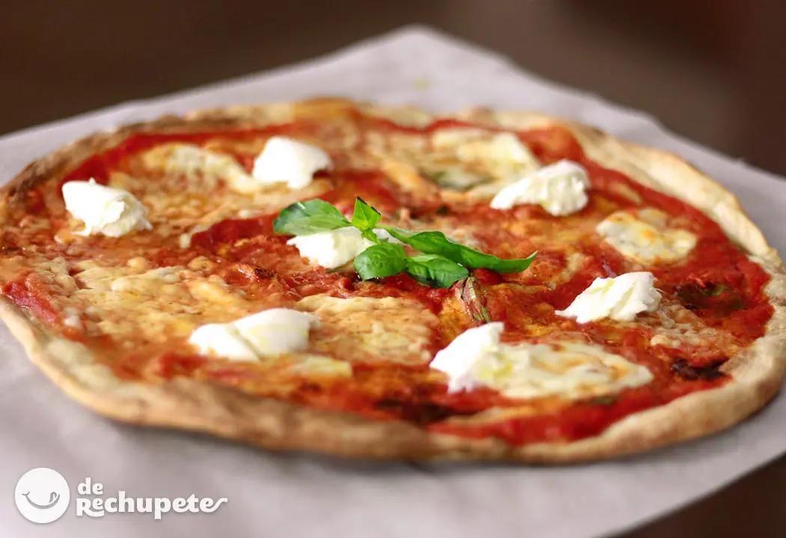
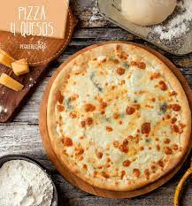
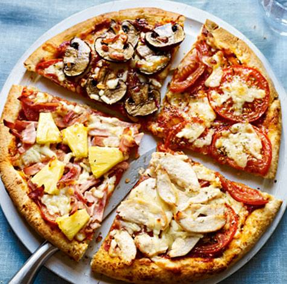
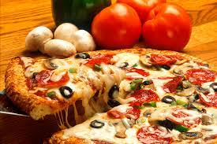
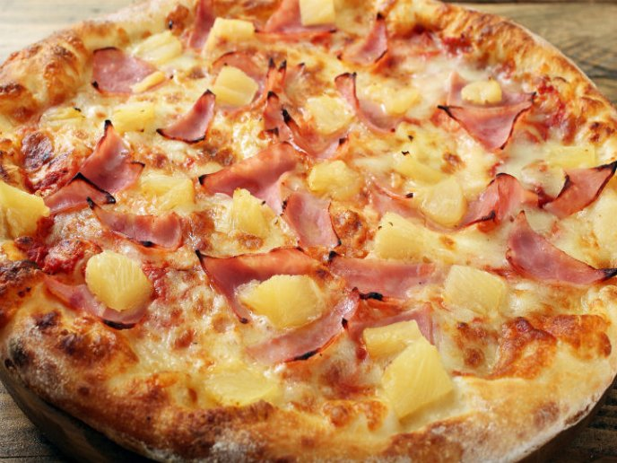
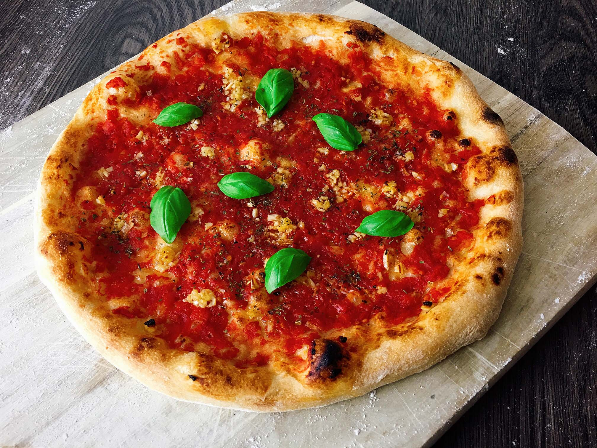

Pizza Margarita
La pizza margarita es una típica pizza napolitana elaborada con tomate, mozzarella, albahaca fresca, sal y aceite. Se trata de la pizza napolitana más popular, junto con la marinera.
Pizza Cuatro Quesos
La pizza cuatro quesos, en italiano Pizza quattro formaggi es una variante de pizza con cuatro quesos italianos, que generalmente son la mozarela, el gorgonzola, el fontina y el parmesano. Todos estos quesos son fundibles. Se derriten sobre una base de salsa de tomate, o también hay recetas sin tomate.
Pizza Cuatro Estaciones
La pizza cuatro estaciones, en italiano, pizza quattro stagioni es una variedad italiana de pizza que se prepara en cuatro secciones con diversos ingredientes, y cada sección representa una estación del año.
Pizza Pepperoni

La pizza pepperoni tiene su origen en América del Norte. Se trata de una pizza con base de salsa de tomate, mozzarella y pepperoni, un tipo de salami curado hecho a base de carne de cerdo y de vaca mezclados y sazonados con pimentón.
Pizza De Champiñones
Pizza con la que siempre triunfarás: la pizza suprema de champiñones. La pizza suprema es todo un referente entre las más típicas recetas de pizza del mundo y se encuentra en la gran mayoría de cartas de pizzerías del mundo.
Pizza Hawaiana
La pizza hawaiana es una pizza que contiene una base de queso fundido y tomate que se aliñan con jamón y piña Algunas versiones de esta pizza incluyen tocino, gambas, cerezas, pimiento rojo, champiñón, cebollas o jalapeños. Sea como sea, la piña está siempre presente
Pizza Marinera
La pizza marinera es una pizza napolitana típica condimentada con tomate, ajo, orégano y aceite. Se trata de la pizza napolitana más popular, junto con la Margarita. No debe confundirse con la pizza de marisco.
Pizza Napolitana

La pizza napolitana, de masa tierna y delgada pero bordes altos, es la versión propia de la cocina napolitana de la pizza redonda. El término pizza napoletana, por su importancia histórica o regional, se emplea en algunas zonas como sinónimo de pizza tonda.